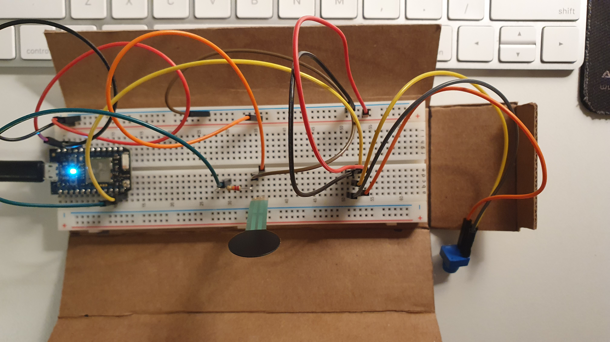
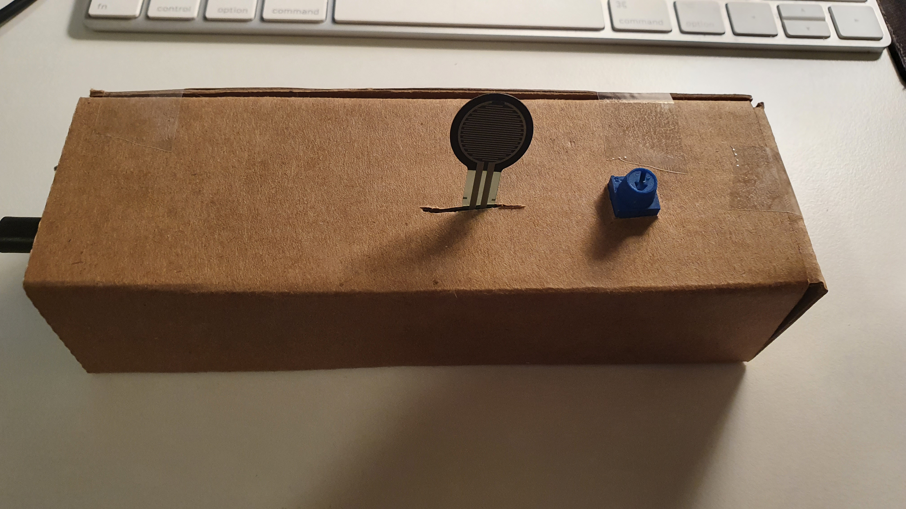

Project 02 - City Control
In this project, I decide to work on the control environment and some lighting of the city. Because of the first project, I am not able to change the environment of the visual. So in this project, I want to work more on how to use controllers to change environments
I want to use a potentiometer to change the color of the sky. Then I need a switch to control the light of the building so I use a force sensor as buildings light switch.
 When the user switches the potentiometer, the background color will change and the same color as the background circle will start to move. This circle will cover the sun's shape, in visual, the sun will change to the moon.
In the future, I want to create more weather effects and let users control them. They also can decide which weather effect they want to show on the screen.